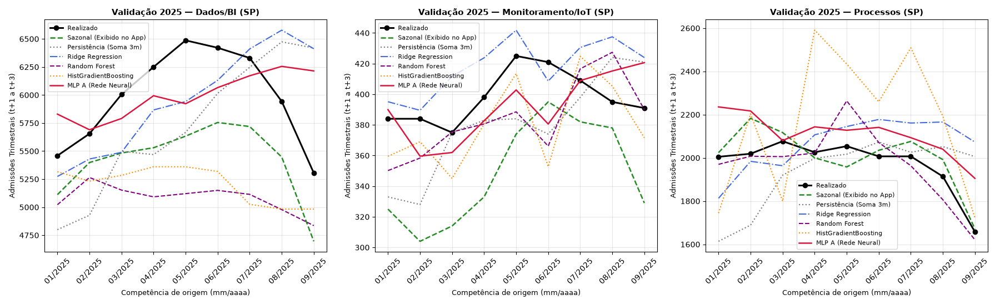
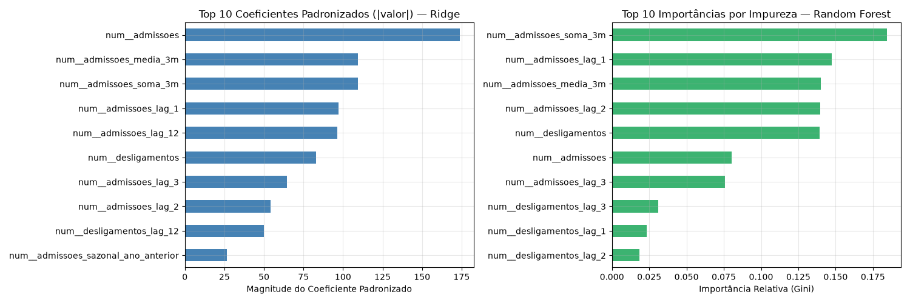

Previsão de Demanda de Admissões Formais no Mercado de Tecnologia
Projeto CitizenTech — Machine Learning & Modelling (GS 2026.2)
Integrantes (nome completo + RM): Guilherme Orugian — RM572882; Lucas Henrique — RM571901; Rodrigo Bettio — RM573725.
- Problema: Apoio à transição de carreira para profissionais graduados por meio de estimativas de admissões formais.
- Público: Profissionais com ensino superior completo em processo de transição ou requalificação para tecnologia.
- Fonte Oficial: Microdados do Novo Caged (Ministério do Trabalho e Emprego — MTE).
- Alvo: Admissões formais acumuladas no trimestre móvel seguinte (t+1 a t+3) por destino profissional e UF.
Problema e Público
- Contexto da Transição de Carreira:
- Profissionais com ensino superior enfrentam incertezas ao migrar para a área tecnológica.
- Os microdados públicos existem, mas não chegam ao profissional em formato comparável por ocupação e território.
- Definição Operacional do Problema:
- Estimar o volume de admissões formais com superior completo no trimestre seguinte (A(t+1) + A(t+2) + A(t+3)).
- Recorte em 3 grupos ocupacionais de destino (CBO) × 27 Unidades da Federação.
- Público-Alvo:
- Pessoas graduadas em transição de carreira que buscam direcionamento informado por dados.
- Usuários que necessitam de contexto territorial realista sobre movimentações formais do mercado de trabalho.
Motivação
- Assimetria de Informação:
- Sem um indicador comparável, a escolha tende a se apoiar em percepções gerais sobre o mercado (premissa do projeto, não medida aqui).
- Falta de ferramentas que traduzam registros administrativos públicos em indicadores analíticos acessíveis.
- Transparência e Honestidade Metodológica:
- Evitar promessas infundadas ou abordagens deterministas.
- Oferecer uma métrica observável de fluxo no emprego formal para balizar o planejamento de estudos e transição.
- Impacto Social:
- Objetivo (não medido nesta entrega): dar contexto territorial de admissões formais para apoiar o planejamento da transição.
Base de Dados
- Origem dos Dados:
- Microdados administrativos do Novo Caged (MTE), abrangendo admissões e desligamentos formais com nível superior.
- Recorte MVP (R29):
- Três grupos de ocupações tecnológicas:
analista_dados_bi, analista_monitoramento_iot e analista_processos.
- 27 UFs brasileiras, gerando 81 séries temporais mensais de 202001 a 202509 (5.589 observações no painel).
- Critério de Densidade (D04a):
- Média mínima de 10 admissões no alvo durante o período de treino.
- 55 séries elegíveis (26 séries excluídas por baixa densidade); 495 observações no conjunto de validação externa.
- Governança Temporal (D10):
- Histórico 2020 reservado exclusivamente para lags; fit de 202101 a 202409; embargo de 202410 a 202412; validação de 202501 a 202509; holdout 2026 estritamente fechado.
Arquitetura Simplificada
[Microdados Novo Caged / MTE] (FTP Público Mensal)
│
▼
[Módulo de Ingestão & Recorte MVP] (Filtro CBO TI + Superior Completo)
│
▼
[Painel Mensal de Features] (Lags 1, 2, 3, 12 + Janelas Móveis + Alvo t+1..t+3)
│
▼
[Camada de Modelagem]
├── Baselines de Referência (Persistência e Sazonal Ano Anterior)
├── Modelos Clássicos (Ridge, Random Forest, HistGradientBoosting)
└── Rede Neural Artificial (MLP PyTorch [64, 32])
│
▼
[Exportador de Snapshot Integrado] (citizentech_ml.mercado.exportar)
│
▼
[API FastAPI & Painel Técnico R06] (`GET /mercado/{destino}/modelos`)
Modelos Comparados
- Baselines Heurísticos de Referência:
- Persistência: replica a soma de admissões dos 3 meses mais recentes (
admissoes_soma_3m).
- Sazonal: replica as admissões do mesmo trimestre no ano anterior (
admissoes_sazonal_ano_anterior).
- Modelos Clássicos de Machine Learning:
- Ridge Regression: modelo linear com regularização L2 para controle de multicolinearidade entre lags temporais.
- Random Forest Regressor: ensemble de árvores de decisão capaz de capturar não-linearidades e interações entre UFs e ocupações.
- HistGradientBoosting Regressor: boosting baseado em histogramas para modelagem rápida e robusta a dispersões.
- Referência Neural:
- Multi-Layer Perceptron (MLP): arquitetura com 2 camadas ocultas [64, 32], regularização via Dropout e Early Stopping.
Otimização e Hiperparâmetros
- Protocolo de Validação Cruzada:
RandomizedSearchCV temporal com 3 folds expandidos e embargo temporal de 3 meses entre treino e teste de cada fold.- Prevenção rigorosa contra vazamento temporal (data leakage): imputação mediana e padronização calculadas estritamente dentro de cada fold.
- Hiperparâmetros Selecionados pelo CV:
- Ridge: α = 100,0 (forte regularização L2 necessária pela alta correlação entre lags).
- Random Forest:
n_estimators = 100, max_depth = 12, min_samples_leaf = 3.
- HistGradientBoosting:
max_leaf_nodes = 15, learning_rate = 0,1, l2_regularization = 0,0.
Métricas de Desempenho (Validação Externa 2025)
Avaliação em 55 séries elegíveis (495 pontos temporais de 202501 a 202509):
| Modelo |
MAE |
RMSE |
WAPE |
MASE |
| Baseline Persistência |
35,45 |
103,58 |
12,56% |
0,798 |
| Baseline Sazonal |
33,60 |
91,38 |
11,90% |
0,833 |
| Ridge Regression |
34,26 |
84,42 |
12,14% |
1,220 |
| Random Forest |
35,63 |
135,60 |
12,62% |
0,726 |
| HistGradientBoosting |
39,74 |
132,10 |
14,08% |
0,770 |
| MLP A (Referência RNA) |
31,65 |
73,67 |
11,21% |
1,136 |

Constatação central: Nenhum modelo clássico superou o Baseline Sazonal em MAE. A MLP apresentou o menor erro (−5,78% vs sazonal).
Importância das Variáveis
- Comportamento das Variáveis Preditivas:
- Dominância expressiva das variáveis autorregressivas recentes: no Random Forest, destacam-se
admissoes_soma_3m (0,1845), admissoes_lag_1 (0,1472), admissoes_media_3m (0,1400), admissoes_lag_2 (0,1398) e desligamentos (0,1394).
- No Ridge, os maiores coeficientes padronizados absolutos são
admissoes (174,03), admissoes_media_3m (109,43) e admissoes_soma_3m (109,43).
- A feature
admissoes_sazonal_ano_anterior tem importância residual no Random Forest (0,0008); totais nacionais não são incluídos no rol de preditores numéricos do modelo.
- Leitura Metodológica Crítica:
- As variáveis refletem forte inércia estrutural do emprego formal nas ocupações de tecnologia.
- As relações identificadas são de caráter estritamente preditivo estatístico, não configurando inferência de causalidade econômica.
- Visualização das Importâncias:
- Gráfico abaixo (gerado pelo notebook a partir dos artefatos).

Modelo Final e Decisão Honesta de Promoção
- Regra de Decisão do Projeto (D10a):
- Um modelo é promovido ao número mostrado ao usuário só se o MAE de validação ficar ≥ 5% abaixo do melhor baseline E o desvio do WAPE entre folds for menor que o ganho; a decisão final depende da avaliação no holdout 2026, que está fechado.
- Diagnóstico Transparente:
- Os modelos clássicos não superaram o Baseline Sazonal (MAE 33,60 vs Ridge 34,26 e RF 35,63).
- A MLP obteve MAE 31,65 na validação 2025 (−5,78% vs sazonal), atendendo isoladamente apenas à 1ª condição; isso não configura promoção, exigindo a verificação completa de estabilidade e o teste no holdout fechado de 2026.
- Decisão Operacional:
- O aplicativo em produção expõe as estimativas do Baseline Sazonal por integridade metodológica e governança.
- A MLP A permanece como modelo candidato em observação técnica no painel técnico R06.
Demonstração da Aplicação Prática
- Exemplo Real no Estado de São Paulo (Origem 202509):
analista_dados_bi (SP): mês atual = 1.994; persistência (soma 3m) = 6.419; sazonal = 4.696; Ridge = 6.412,2; RF = 4.835,9; HGB = 4.983,3; MLP = 6.214,6; realizado = 5.305.analista_monitoramento_iot (SP): mês atual = 121; persistência (soma 3m) = 421; sazonal = 329; Ridge = 424,0; RF = 390,0; HGB = 371,5; MLP = 420,6; realizado = 391.analista_processos (SP): mês atual = 645; persistência (soma 3m) = 2.006; sazonal = 1.672; Ridge = 2.073,2; RF = 1.621,0; HGB = 1.723,2; MLP = 1.905,1; realizado = 1.658.- Como o Usuário Utiliza a Informação:
- O profissional em transição consulta as admissões estimadas no seu estado e ocupação como indicativo de dinamismo territorial.
- As estimativas servem como métrica contextual de orientação, e não como veredito ou garantia individual de contratação.
Alinhamento aos Objetivos de Desenvolvimento Sustentável (ODS)
- ODS 4 — Educação de Qualidade (Meta 4.4):
- Aumentar substancialmente o número de jovens e adultos com competências técnicas e profissionais relevantes para emprego e trabalho decente.
- A ferramenta direciona o esforço formativo para áreas de tecnologia com demanda formal mensurável.
- ODS 8 — Trabalho Decente e Crescimento Econômico (Metas 8.5 e 8.6):
- Alcançar emprego pleno e produtivo para mulheres e homens, reduzindo a proporção de jovens e adultos sem ocupação ou formação.
- Proporciona transparência de mercado para apoiar trajetórias de requalificação produtiva.
- ODS 10 — Redução das Desigualdades:
- Democratização do acesso à inteligência analítica de dados do mercado de trabalho formal, historicamente restrita a grandes consultorias.